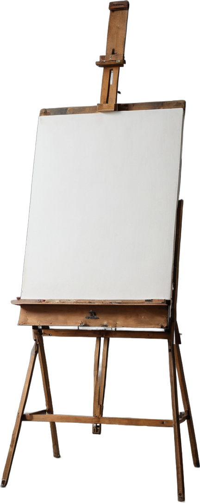
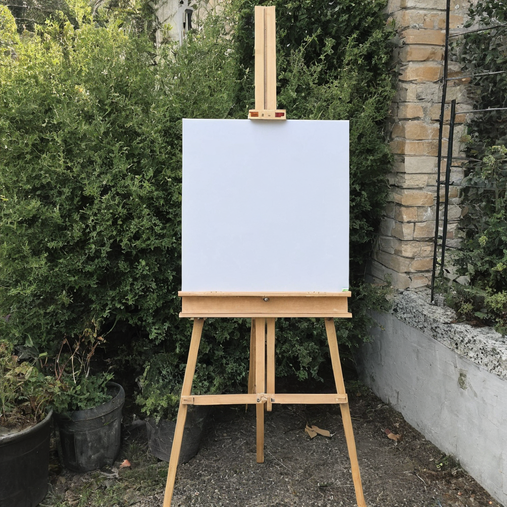
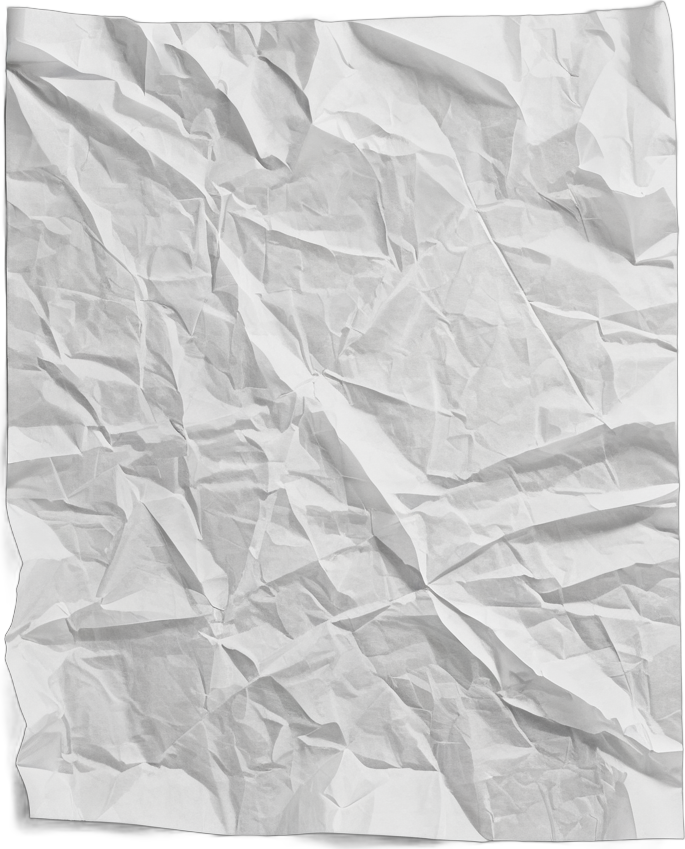
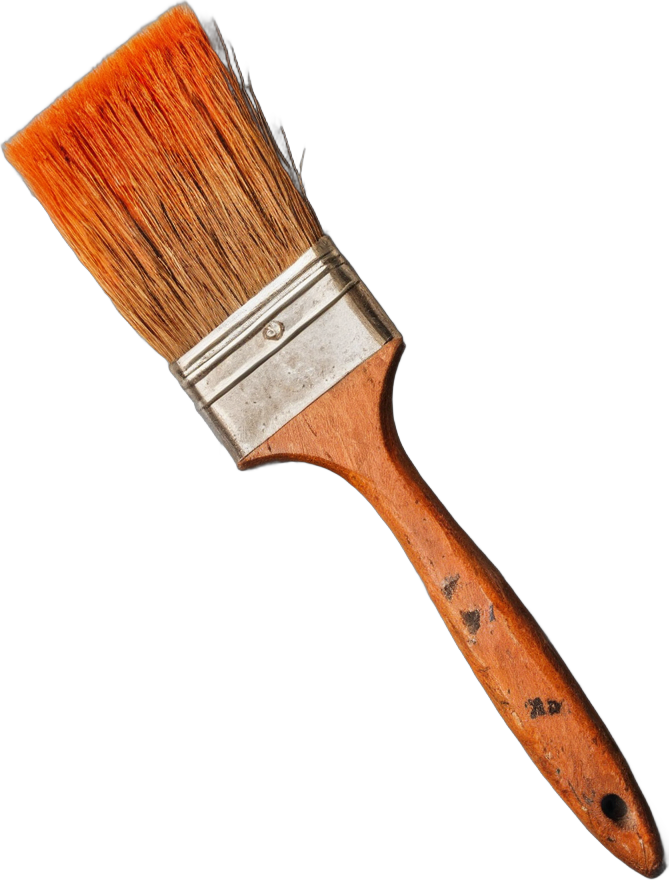

<!doctype html>
<html lang="pt-BR"><head><meta charset="utf-8">
<title>Nogueira Mídias · Carrossel 001 · Do zero ao post</title>
<link rel="stylesheet" href="https://fonts.googleapis.com/css2?family=Anton&family=Instrument+Serif:ital@0;1&family=Outfit:wght@300;400;500;600;700;800&family=JetBrains+Mono:wght@400;600&display=swap">
<link rel="stylesheet" href="../brand/tokens.css">
<style>
/* Arte panorâmica: 9 slides 1080x1350 lado a lado (9720x1350), fatiada depois.
   Direção: cara de foto editada no Photoshop — fotografia real, sombra no chão, grão de filme, cor quente. Sem neon. */
*{box-sizing:border-box;margin:0;padding:0}
html,body{width:9720px;height:1350px;background:#000;overflow:hidden}
#stage{position:relative;width:9720px;height:1350px;font-family:var(--f-ui);color:var(--creme)}
.slide{position:absolute;top:0;width:1080px;height:1350px;overflow:hidden}
.dark{background:radial-gradient(70% 38% at 50% 16%,#2a1d0e 0%,#16120d 40%,var(--noite) 75%)}
.dark2{background:radial-gradient(70% 38% at 50% 85%,#22180c 0%,var(--noite) 70%)}
.light{background:radial-gradient(120% 80% at 50% 15%,#F6F5F2 0%,var(--papel) 60%,#d6d3cc 100%);color:#1b1712}

.bar{position:absolute;top:34px;left:44px;right:44px;display:flex;justify-content:space-between;align-items:center;font-size:24px;opacity:.9;z-index:60}
.bar .m b{font-weight:700}.bar .x,.bar .min{font-size:30px;font-weight:300}
.cnt{position:absolute;top:96px;left:50%;transform:translateX(-50%);font-family:var(--f-mono);font-size:20px;border:1.5px solid currentColor;border-radius:999px;padding:3px 16px;opacity:.6;z-index:60}
.light .bar,.light .cnt{color:#1b1712}

.k{font-size:40px;line-height:1.2}.k b{font-weight:700}
.it{font-family:var(--f-serif);font-style:italic;font-weight:400;color:var(--laranja)}
.light .it{color:var(--laranja-p)}
.disp{font-family:var(--f-display);text-transform:uppercase;line-height:.86}
.step{display:inline-flex;font-family:var(--f-mono);font-size:22px;font-weight:600;letter-spacing:.16em;color:var(--noite);background:var(--ambar);padding:6px 16px;border-radius:999px}
.h2{font-family:var(--f-display);font-size:120px;text-transform:uppercase;line-height:.9}
.h2 .it{text-transform:none;font-size:1.05em}
.body{font-size:30px;line-height:1.38;color:rgba(243,237,227,.82)}
.body b{color:var(--creme)}
.light .body{color:#4a4238}.light .body b{color:#1b1712}
.mono{font-family:var(--f-mono)}

.grain{position:absolute;inset:0;pointer-events:none;z-index:55;opacity:.16;mix-blend-mode:overlay;background-image:url("data:image/svg+xml;utf8,<svg xmlns='http://www.w3.org/2000/svg' width='300' height='300'><filter id='n'><feTurbulence type='fractalNoise' baseFrequency='.85' numOctaves='3' stitchTiles='stitch'/><feColorMatrix values='0 0 0 0 1  0 0 0 0 1  0 0 0 0 1  0 0 0 1 0'/></filter><rect width='300' height='300' filter='url(%23n)'/></svg>")}
.vign{position:absolute;inset:0;pointer-events:none;z-index:54;background:radial-gradient(120% 90% at 50% 45%,transparent 55%,rgba(0,0,0,.5) 100%)}
.light .vign{background:radial-gradient(120% 90% at 50% 45%,transparent 60%,rgba(70,50,20,.18) 100%)}
.grade{position:absolute;inset:0;pointer-events:none;z-index:53;mix-blend-mode:soft-light;background:linear-gradient(180deg,rgba(255,170,80,.12),rgba(20,10,0,.3))}
.obj{filter:drop-shadow(0 30px 30px rgba(0,0,0,.45))}
.card{background:rgba(255,255,255,.05);border:1.5px solid rgba(255,255,255,.12);border-radius:26px}
.light .card{background:rgba(255,255,255,.75);border-color:rgba(27,23,18,.08);box-shadow:0 30px 60px -24px rgba(70,50,20,.35)}

/* ---------- capa (componente) ---------- */
.cover{position:relative;width:1080px;height:1350px;overflow:hidden;background:#1b120a}
.cover .bg{position:absolute;inset:0;width:100%;height:100%;object-fit:cover}
.cover .shade{position:absolute;inset:0;background:linear-gradient(180deg,rgba(13,14,12,.55) 0%,rgba(13,14,12,.1) 35%,rgba(13,14,12,0) 60%,rgba(13,14,12,.55) 100%)}
.cover .pre{position:absolute;top:158px;left:0;right:0;text-align:center;font-size:40px;z-index:6;text-shadow:0 2px 14px rgba(0,0,0,.5)}
.cover .pre .it{font-size:50px}
.cover .tA{position:absolute;top:222px;left:0;right:0;text-align:center;font-size:300px;color:var(--creme);z-index:5;text-shadow:0 14px 40px rgba(60,25,0,.45)}
.cover .ground{position:absolute;left:290px;top:1200px;width:500px;height:80px;border-radius:50%;background:radial-gradient(closest-side,rgba(40,20,5,.75),transparent);z-index:7;filter:blur(6px)}
.cover .easel{filter:sepia(.22) saturate(1.15) brightness(.97) drop-shadow(-18px 18px 18px rgba(40,18,0,.4))}
.cover .eshadow{position:absolute;height:1000px;left:341px;top:250px;z-index:7;transform-origin:50% 100%;transform:skewX(-62deg) scaleY(.22);filter:brightness(0) blur(5px);opacity:.42}
.cover.flat .eshadow{display:none}
.cover .tB{position:absolute;top:1000px;left:0;right:0;text-align:center;font-size:170px;z-index:9;text-shadow:0 8px 30px rgba(0,0,0,.55)}
.cover .fg{position:absolute;width:210px;left:-70px;bottom:150px;z-index:12;filter:blur(7px) brightness(.8) sepia(.3);transform:rotate(-24deg);opacity:.9}
.cover .arr{position:absolute;bottom:52px;left:0;right:0;text-align:center;font-family:var(--f-mono);font-size:24px;letter-spacing:.42em;z-index:14;opacity:.9}
.cover.flat .grain,.cover.flat .vign,.cover.flat .grade,.cover.flat .fg,.cover.flat .ground,.cover.flat .shade{display:none}
.cover.flat .easel{filter:none}
.cover.flat .tA,.cover.flat .tB,.cover.flat .pre{text-shadow:none}
.cover.flat .bg{filter:saturate(.45) brightness(1.12) contrast(.82)}

#thread{position:absolute;left:2160px;top:1220px;width:5400px;height:3px;z-index:30;background:linear-gradient(90deg,transparent,var(--laranja) 4%,var(--laranja) 96%,transparent)}
.node{position:absolute;top:1192px;width:58px;height:58px;margin-left:-29px;border-radius:50%;background:var(--laranja);border:3px solid var(--noite);outline:2px solid var(--laranja);z-index:31;display:flex;align-items:center;justify-content:center;font-family:var(--f-display);font-size:30px;color:var(--noite)}
.nlabel{position:absolute;top:1262px;margin-left:-160px;width:320px;text-align:center;font-family:var(--f-mono);font-size:19px;letter-spacing:.14em;text-transform:uppercase;color:rgba(243,237,227,.5);z-index:31}
</style></head>
<body><div id="stage"></div>
<script>
const W=1080,S=document.getElementById('stage'),Q=new URLSearchParams(location.search);
const SEL=Number(Q.get('sel')||11), BG=Q.get('bg')||'2';
const CV=(Q.get('canvas')||'0.2,0.1,0.6,0.45').split(',').map(Number); /* retângulo da tela branca no recorte, normalizado */
const bar=n=>`<div class="bar"><span class="min">—</span><span class="m">@nogueira_midias | <b>Nogueira Mídias</b></span><span class="x">✕</span></div>`+(n?`<div class="cnt">${n}</div>`:'');
const fx=`<div class="grade"></div><div class="vign"></div><div class="grain"></div>`;
function cover(extra='',inner=''){return `<div class="cover ${extra}">
  <div class="shade"></div>
  <p class="pre">como eu criei <span class="it">esse post</span></p>
  <div class="tA disp">Do zero</div>
  <div class="ground"></div>
  
  <div style="position:absolute;height:1000px;width:398px;left:341px;top:250px;z-index:8">
    
    ${inner?`<div style="position:absolute;z-index:5;isolation:isolate;left:${CV[0]*100}%;top:${CV[1]*100}%;width:${CV[2]*100}%;height:${CV[3]*100}%;overflow:hidden">${inner}</div>`:''}
  </div>
  <div class="tB it">ao post.</div>
  <div class="arr">ARRASTA PRO LADO →</div>
  ${fx}</div>`}
function slide(i,cls,html){const d=document.createElement('section');d.className='slide '+cls;d.style.left=(i*W)+'px';d.innerHTML=html;S.appendChild(d)}

/* 1 CAPA */
slide(0,'',cover()+`<div style="position:absolute;inset:0;z-index:60">${bar()}<div class="cnt" style="color:var(--creme)">#001 / 365</div></div>`);

/* 2 O COMANDO */
slide(1,'dark2',`${bar('02 / 09')}
 <div style="position:absolute;top:190px;left:90px;right:90px">
  <p class="k">Tudo o que você vai ver aqui<br>eu <b>criei com IA.</b></p>
  <p class="h2" style="margin-top:34px;font-size:112px">Mas a IA não<br>pensa <span class="it">por mim.</span></p>
 </div>
 <div class="card" style="position:absolute;left:90px;right:90px;top:690px;padding:34px 38px">
  <div style="display:flex;align-items:center;gap:14px;font-size:24px;opacity:.7"><span style="width:12px;height:12px;border-radius:50%;background:var(--laranja)"></span>Claude · nova conversa</div>
  <p class="mono" style="font-size:23px;line-height:1.55;margin-top:22px">&gt; Cria a capa do meu primeiro post.<br>&nbsp;&nbsp;Uma tela em branco num cavalete,<br>&nbsp;&nbsp;no meio do deserto, no pôr do sol.<br>&nbsp;&nbsp;Título “DO ZERO” <b>atrás</b> da tela.<br>&nbsp;&nbsp;Cara de <span style="color:var(--laranja)">foto</span>, não de IA. Em camadas.<span style="color:var(--ambar)">▋</span></p>
  <div style="margin-top:26px;padding-top:22px;border-top:1.5px solid rgba(255,255,255,.1);font-size:26px;color:rgba(243,237,227,.85)">Beleza. Vou em <b style="color:var(--ambar)">5 etapas</b>: rascunho → imagem → recorte → camadas → acabamento.</div>
 </div>
 <p class="body" style="position:absolute;left:90px;right:90px;bottom:118px">O comando certo é <b>metade do design.</b> Arrasta que eu te mostro a outra metade.</p>${fx}`);

/* 3 RASCUNHO */
slide(2,'dark',`${bar('03 / 09')}
 <div style="position:absolute;top:170px;left:90px"><span class="step">ETAPA 1</span><p class="h2" style="margin-top:22px">O <span class="it">rascunho</span></p></div>
 <div style="position:absolute;left:150px;top:450px;width:500px;height:625px;border-radius:6px;background:#efe9de;box-shadow:0 30px 50px rgba(0,0,0,.55);transform:rotate(-2deg)">
  <svg viewBox="0 0 500 625" width="500" height="625" style="position:absolute;inset:0">
   <g stroke="#3a3128" fill="none" stroke-width="2.4" stroke-linecap="round" stroke-linejoin="round" opacity=".85">
    <rect x="18" y="18" width="464" height="589" rx="3" stroke-dasharray="2 6"/>
    <path d="M40 470 Q160 430 260 455 T470 440"/>
    <path d="M40 520 Q200 490 470 505" stroke-opacity=".5"/>
    <rect x="175" y="215" width="150" height="190" rx="2" stroke="#A64F08" stroke-width="3.4"/>
    <path d="M190 405 L165 500 M310 405 L335 500 M250 405 L250 470 M175 395 L325 395" stroke="#A64F08" stroke-width="3"/>
    <path d="M200 520 Q250 540 300 520" stroke-opacity=".5"/>
   </g>
   <text x="250" y="170" fill="#3a3128" font-family="Anton" font-size="78" text-anchor="middle" opacity=".85">DO ZERO</text>
   <text x="250" y="580" fill="#A64F08" font-family="Instrument Serif" font-style="italic" font-size="44" text-anchor="middle">ao post.</text>
  </svg>
 </div>
 <div style="position:absolute;left:690px;top:470px;width:330px;display:flex;flex-direction:column;gap:70px;font-family:var(--f-serif);font-style:italic;font-size:38px;line-height:1.1">
  <p><span style="color:var(--ambar)">←</span> título grande,<br>o olho entra aqui</p>
  <p><span style="color:var(--laranja)">←</span> a tela <b style="font-family:var(--f-ui);font-style:normal;font-size:30px">na frente</b><br>do título</p>
  <p><span style="color:var(--ambar)">←</span> deserto pra<br>dar clima</p>
 </div>
 <p class="body" style="position:absolute;left:90px;right:90px;top:1108px">Antes de gerar qualquer imagem, eu decido <b>onde o olho entra</b> e o que fica na frente.</p>
 <div class="node" style="left:540px">1</div>${fx}`);

/* 4 IMAGEM */
slide(3,'dark2',`${bar('04 / 09')}
 <div style="position:absolute;top:170px;left:90px"><span class="step">ETAPA 2</span><p class="h2" style="margin-top:22px">A <span class="it">imagem</span></p></div>
 <div style="position:absolute;left:150px;right:150px;top:440px;display:grid;grid-template-columns:1fr 1fr 1fr 1fr;gap:16px">
  ${[11,22,33,44].map(s=>`<div style="position:relative;aspect-ratio:4/5;border-radius:12px;overflow:hidden;${s===SEL?'outline:4px solid var(--laranja)':'opacity:.4;filter:grayscale(.4)'}"></div>`).join('')}
 </div>
 <div style="position:absolute;left:150px;right:150px;top:690px;height:400px;border-radius:16px;overflow:hidden;box-shadow:0 30px 50px rgba(0,0,0,.5)"></div>
 <span style="position:absolute;left:170px;top:1060px;font-family:var(--f-mono);font-size:18px;background:rgba(0,0,0,.6);padding:4px 10px;border-radius:6px;z-index:5">CENÁRIO</span>
 <span style="position:absolute;left:150px;top:400px;font-family:var(--f-mono);font-size:18px;color:rgba(243,237,227,.6)">4 VERSÕES · ESCOLHI UMA</span>
 <p class="body" style="position:absolute;left:90px;right:90px;top:1118px;font-size:28px">Objeto e cenário <b>separados</b>. O cavalete em fundo cinza liso, pra recortar fácil.</p>
 <div class="node" style="left:540px">2</div>${fx}`);

/* 5 RECORTE */
slide(4,'dark',`${bar('05 / 09')}
 <div style="position:absolute;top:170px;left:90px"><span class="step">ETAPA 3</span><p class="h2" style="margin-top:22px">O <span class="it">recorte</span></p></div>
 <div style="position:absolute;left:190px;top:430px;width:700px;height:660px;border-radius:10px;overflow:hidden;background-color:#d4d0ca;background-image:linear-gradient(45deg,#b9b4ac 25%,transparent 25%),linear-gradient(-45deg,#b9b4ac 25%,transparent 25%),linear-gradient(45deg,transparent 75%,#b9b4ac 75%),linear-gradient(-45deg,transparent 75%,#b9b4ac 75%);background-size:44px 44px;background-position:0 0,0 22px,22px -22px,-22px 0">
  
  <svg style="position:absolute;inset:0" width="700" height="660"><rect x="222" y="10" width="255" height="640" fill="none" stroke="#000" stroke-width="2" stroke-dasharray="8 6"><animate/></rect></svg>
 </div>
 <div style="position:absolute;left:190px;top:400px;font-family:var(--f-mono);font-size:18px;color:rgba(243,237,227,.6)">cavalete.png · fundo transparente</div>
 <p class="body" style="position:absolute;left:90px;right:90px;top:1110px">Tirei o fundo. Agora a tela pode ficar <b>na frente do título</b>, e é isso que dá profundidade.</p>
 <div class="node" style="left:540px">3</div>${fx}`);

/* 6 CAMADAS */
const L=[['5','luz, cor e grão'],['4','o cavalete'],['3','o título'],['2','a sombra'],['1','o deserto']];
slide(5,'dark2',`${bar('06 / 09')}
 <div style="position:absolute;top:170px;left:90px"><span class="step">ETAPA 4</span><p class="h2" style="margin-top:22px">As <span class="it">camadas</span></p></div>
 <div style="position:absolute;left:30px;top:330px;width:640px;height:720px;transform:scale(.86);transform-origin:50% 0">
  ${[0,1,2,3,4].map(i=>`<div style="position:absolute;left:160px;top:${420-i*90}px;width:330px;height:412px;border-radius:10px;transform:rotateX(58deg) rotateZ(-38deg);border:1.5px solid rgba(255,255,255,.3);overflow:hidden;box-shadow:0 30px 40px rgba(0,0,0,.45);${i===4?'background:linear-gradient(180deg,rgba(255,170,80,.35),rgba(20,10,0,.3))':'background:rgba(255,255,255,.03)'}">
   ${i===0?``:''}
   ${i===1?'<div style="position:absolute;left:15%;bottom:8%;width:70%;height:12%;border-radius:50%;background:radial-gradient(closest-side,rgba(40,20,5,.9),transparent)"></div>':''}
   ${i===2?'<div class="disp" style="position:absolute;top:26px;width:100%;text-align:center;font-size:92px;color:var(--creme)">Do zero</div>':''}
   ${i===3?'':''}
  </div>`).join('')}
 </div>
 <div style="position:absolute;left:660px;top:470px;display:flex;flex-direction:column;gap:30px">
  ${L.map(([n,t])=>`<div style="display:flex;align-items:center;gap:18px;font-size:32px"><span style="width:48px;height:48px;border-radius:50%;background:var(--ambar);color:var(--noite);font-weight:800;font-size:26px;display:flex;align-items:center;justify-content:center">${n}</span>${t}</div>`).join('')}
 </div>
 <p class="body" style="position:absolute;left:90px;right:90px;top:1110px">Eu monto a capa <b>em código</b>, camada por camada. Dá pra trocar qualquer uma.</p>
 <div class="node" style="left:540px">4</div>${fx}`);

/* 7 ACABAMENTO */
slide(6,'dark',`${bar('07 / 09')}
 <div style="position:absolute;top:170px;left:90px"><span class="step">ETAPA 5</span><p class="h2" style="margin-top:22px">O <span class="it">acabamento</span></p></div>
 <div style="position:absolute;left:150px;top:440px;width:540px;height:675px;border-radius:14px;overflow:hidden;box-shadow:0 40px 70px rgba(0,0,0,.6)">
  <div style="position:absolute;left:0;top:0;transform:scale(.5);transform-origin:0 0">${cover('flat')}</div>
  <div style="position:absolute;left:0;top:0;width:540px;height:675px;clip-path:inset(0 0 0 50%)"><div style="transform:scale(.5);transform-origin:0 0">${cover()}</div></div>
  <div style="position:absolute;left:268px;top:0;bottom:0;width:4px;background:var(--creme)"></div>
  <div style="position:absolute;left:246px;top:313px;width:48px;height:48px;border-radius:50%;background:var(--creme);color:var(--noite);display:flex;align-items:center;justify-content:center;font-size:22px;font-weight:800">⇆</div>
  <span class="mono" style="position:absolute;left:16px;top:16px;font-size:18px;background:rgba(0,0,0,.6);padding:4px 10px;border-radius:6px">ANTES</span>
  <span class="mono" style="position:absolute;right:16px;top:16px;font-size:18px;background:var(--laranja);color:var(--noite);padding:4px 10px;border-radius:6px;font-weight:600">DEPOIS</span>
 </div>
 <div style="position:absolute;left:730px;top:470px;display:flex;flex-direction:column;gap:20px;font-size:28px">
  ${['sombra no chão','cor do pôr do sol','grão de filme','desfoque na frente','vinheta','contraste'].map(t=>`<span style="white-space:nowrap"><b style="color:var(--laranja)">+</b> ${t}</span>`).join('')}
 </div>
 <p class="body" style="position:absolute;left:90px;right:90px;top:1135px">É aqui que um post <b>comum</b> vira um post que <b>para o dedo.</b></p>
 <div class="node" style="left:540px">5</div>${fx}`);

/* 8 CONTRASTE */
slide(7,'light',`${bar('08 / 09')}
 <div style="position:absolute;top:180px;left:80px;right:80px;text-align:center">
  <p class="h2" style="font-size:104px">Qualquer um<br>aperta o botão.</p>
  <p class="it" style="font-size:92px;line-height:1;margin-top:12px">Poucos sabem o comando.</p>
 </div>
 <div style="position:absolute;left:70px;right:70px;top:565px;display:grid;grid-template-columns:1fr 1fr;gap:30px">
  <div class="card" style="padding:22px;display:flex;flex-direction:column;gap:16px">
   <p class="mono" style="font-size:18px;color:#7a7064">COMANDO GENÉRICO</p>
   <p class="mono" style="font-size:22px;background:#efece6;border-radius:10px;padding:12px 14px">&gt; um cavalete</p>
   <div style="aspect-ratio:4/5;border-radius:12px;overflow:hidden"></div>
  </div>
  <div class="card" style="padding:22px;display:flex;flex-direction:column;gap:16px;outline:4px solid var(--laranja-p)">
   <p class="mono" style="font-size:18px;color:var(--laranja-p);font-weight:600">MEU COMANDO</p>
   <p class="mono" style="font-size:22px;background:#efece6;border-radius:10px;padding:12px 14px">&gt; 5 etapas, em camadas</p>
   <div style="aspect-ratio:4/5;border-radius:12px;overflow:hidden;position:relative"><div style="position:absolute;left:0;top:0;transform:scale(${425/1080});transform-origin:0 0">${cover()}</div></div>
  </div>
 </div>${fx}`);

/* 9 CTA — salvar + compartilhar */
slide(8,'dark',`${bar('09 / 09')}
 <div style="position:absolute;left:0;right:0;top:170px;text-align:center;z-index:5">
  <p class="k" style="font-size:44px">E a tela <span class="it" style="font-size:56px">não está mais em branco.</span></p>
 </div>
 <div style="position:absolute;left:300px;top:270px;width:480px;height:600px;border-radius:12px;overflow:hidden;box-shadow:0 40px 70px rgba(0,0,0,.6);transform:rotate(2deg)">
  <div style="transform:scale(${480/1080});transform-origin:0 0">${cover('final',``)}</div>
 </div>
 <div style="position:absolute;left:0;right:0;top:905px;text-align:center;z-index:5">
  <div style="display:inline-flex;align-items:center;gap:26px">
   <svg width="92" height="120" viewBox="0 0 92 120"><path d="M8 6h76v108L46 88 8 114z" fill="none" stroke="#FFB43D" stroke-width="9" stroke-linejoin="round"/></svg>
   <p class="disp" style="font-size:190px;background:linear-gradient(180deg,var(--ambar),var(--laranja));-webkit-background-clip:text;background-clip:text;color:transparent">Salva</p>
  </div>
  <p class="it" style="font-size:52px;color:var(--creme);margin-top:-6px">pra usar de referência no seu próximo post</p>
  <p style="margin-top:22px;font-size:28px;color:rgba(243,237,227,.75)">e <b style="color:var(--creme)">manda pra quem acha</b> que a IA faz tudo sozinha.</p>
 </div>
 <p class="mono" style="position:absolute;left:0;right:0;bottom:56px;text-align:center;font-size:21px;letter-spacing:.12em;color:rgba(243,237,227,.55)">SEGUE · EU MOSTRO O PROCESSO DE CADA POST</p>${fx}`);

/* elementos que atravessam as emendas */
S.insertAdjacentHTML('beforeend',`
 
 
 
 <div id="thread"></div>
 ${['rascunho','imagem','recorte','camadas','acabamento'].map((t,i)=>`<div class="nlabel" style="left:${(2+i)*W+540}px">${t}</div>`).join('')}
`);
</script></body></html>
